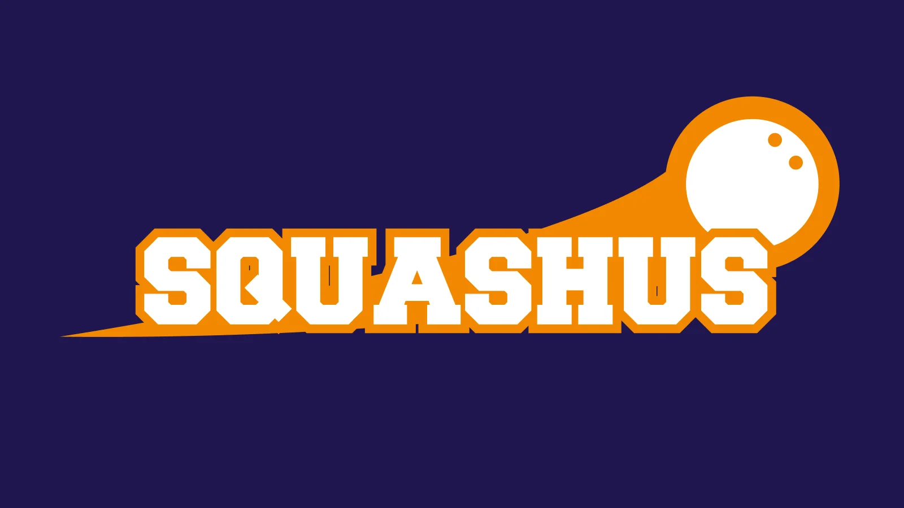

사용 방법: 관리자로부터 받은 서버 설정 정보를 아래 입력창에 붙여넣기 하세요. 🚨 보안 주의: 서버 설정(API Key 등)은 브라우저 공간에 저장됩니다. 보안 규정(Security Rules)을 Firebase 콘솔에서 반드시 구성하세요.
개별 입력:
안내: 월을 선택하면 해당 월에 저장된 지점/주차별 스케줄/휴무일 설정을 자동으로 불러옵니다.
각 일요일에 운영할 지점을 입력하세요. "강북"이 포함되면 모임장이 자동 참석합니다.